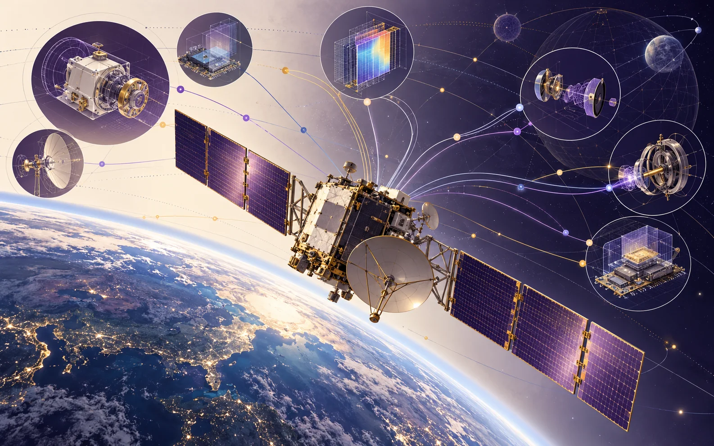
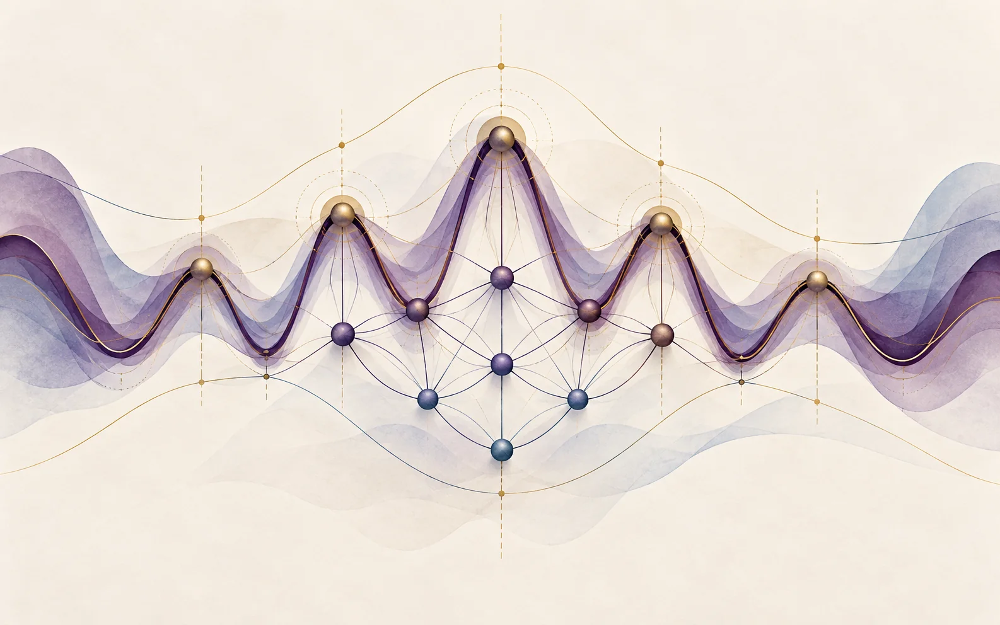
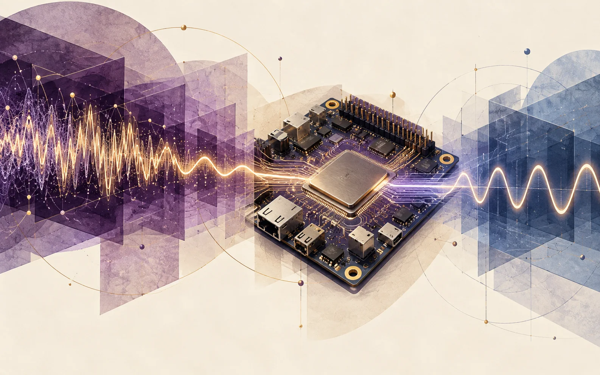
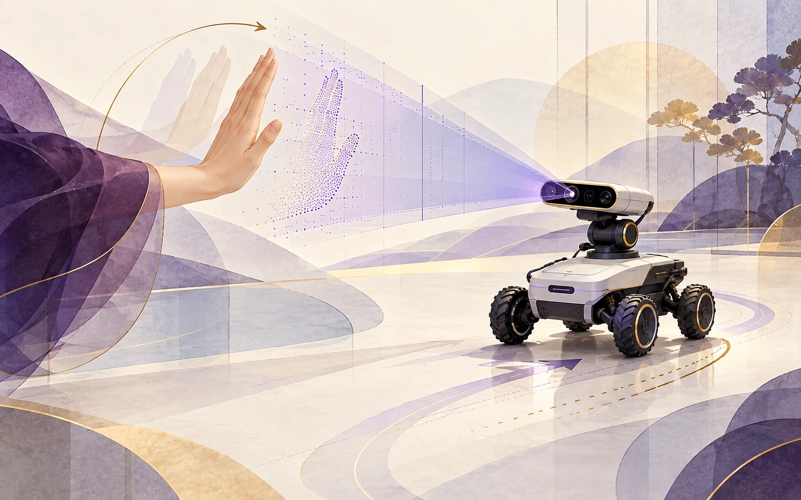

/ 01
2026.07 · 中国空间技术研究院实习
卫星故障根因分析研究
围绕空间复杂约束下的故障解释，调研遥测异常、系统知识与故障先验的结合方式，设计结构化分析方案和专业版、用户版报告界面，并完成专题研究报告与汇报。
Generative AIKnowledge systemsSpace systems

在航天实践、工业感知和智能系统中研究可靠推断与工程实现。
2026.07 · 中国空间技术研究院实习
围绕空间复杂约束下的故障解释，调研遥测异常、系统知识与故障先验的结合方式，设计结构化分析方案和专业版、用户版报告界面，并完成专题研究报告与汇报。

2026 · 清华大学研究工作
提出邻域宽度变换，将一维相干曲线中的谱峰选择转化为结构稳定性分析问题，研究噪声和局部伪峰下的可靠识别。成果发表于 Mathematics（2026）。
研究实践 · 清华大学
研究结合领域先验与轻量学习模型的谱峰识别方法，应对噪声干扰、局部伪峰及波型重叠；相关工作形成 PRML 2026 会议论文。

硕士研究 · 清华大学 / 中海油服合作项目
在工业阵列传感场景中，使用 C++ 实现预处理、谱峰搜索、参数估计、连续性约束与质量控制，构建可集成的实时处理流程。STC 是该项目采用的领域方法之一。

2022 · 哈尔滨工业大学
将手势识别、指令解析与移动控制整合到机器人系统，完成视觉感知到动作执行的闭环。
